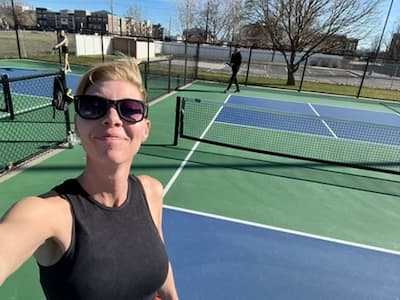

Brittan Daems | WDD 130
,
Hi! My name is Britt, I live in Utah. I currently really like pickleball and play it once or twice a week. I also enjoy hiking and enjoying the beauty God created.

Hi! My name is Britt, I live in Utah. I currently really like pickleball and play it once or twice a week. I also enjoy hiking and enjoying the beauty God created.